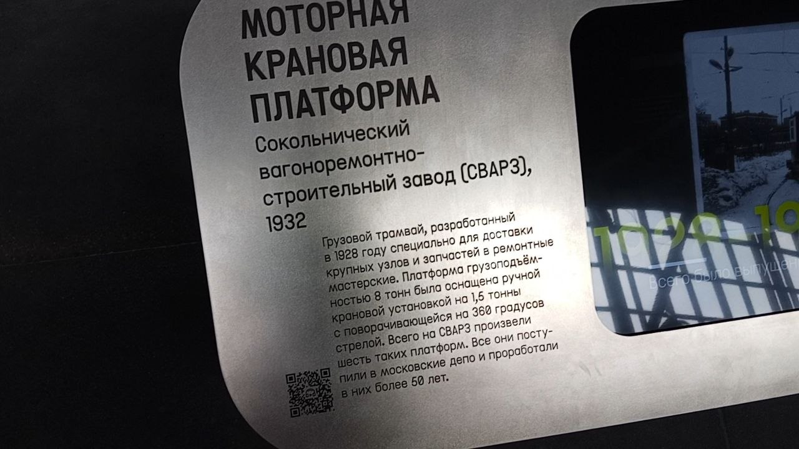

Двухосный моторный СВАРЗ № 3130
Моторная грузовая платформа с краном, построенная Сокольническим вагоноремонтным заводом (СВАРЗ) в 1932 году.
Грузоподъёмность — 8 тонн. Оснащена ручной крановой установкой на 1,5 тонны. Ходовая часть на свободных осях.
История и паспортные данные
Хронология службы
| Город | Депо/Парк | № | С... | По... | Примечание |
|---|---|---|---|---|---|
| 🇷🇺 Москва | Музей Транспорта Москвы | 3130 | 09.2025 | ||
| 01.2022 | 09.2025 | ||||
| Коллекция исторических трамваев | 0220 | 2000 | 01.2022 | Крановая платформа | |
| Трамвайное депо имени Н.Э. Баумана | 3130 | 09.1994 | 2000 | ||
| 🇷🇺 Москва | Трамваи до 1994 года — прочее | 1932 | 09.1994 |
Паспортные данные
| Город: | Москва 🇷🇺 Россия |
| Депо/Парк: | Музей Транспорта Москвы |
| Модель: | Двухосный моторный СВАРЗ |
| Построен: | 1932 |
| Текущее состояние: | Не эксплуатируется |
| Назначение: | Музейный |
| Примечание: | Крановая платформа |
Моторная грузовая платформа с краном.
Ходовая часть на свободных осях.
Построен на заводе СВАРЗ.
Эксплуатировался в депо имени Н.Э. Баумана.
В 1998 — 2000 гг. находился в Краснопресненском депо.
В 09.2022 — 09.2025 гг. проходил реставрацию в фирме "ДизЭТ" (г. Иваново).
14.05.2026 перевезён с ТРЗ в экспозиционный комплекс Музея транспорта Москвы на Новорязанской улице, 27.
Фотогалерея

В экспозиции Музея транспорта Москвы.

Музейная информация о платформе.
Нажмите на фото для увеличения
«Вагоны оказались очень удачными и на долгие годы сняли проблему внутренних грузовых перевозок на московском трамвае. Только в 1980-х годах их стали заменять автомобилями».